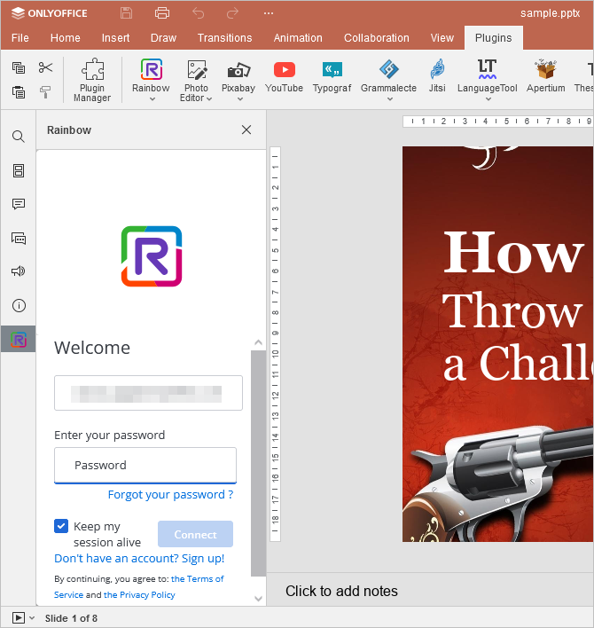
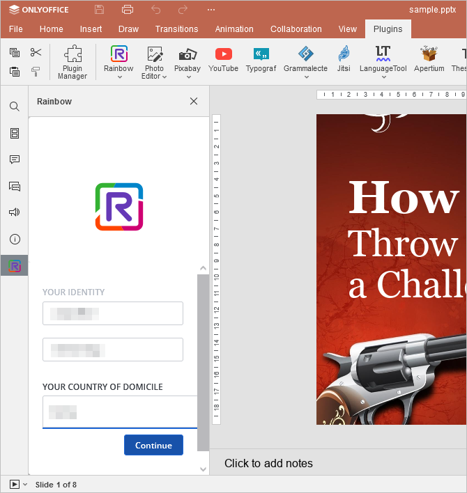
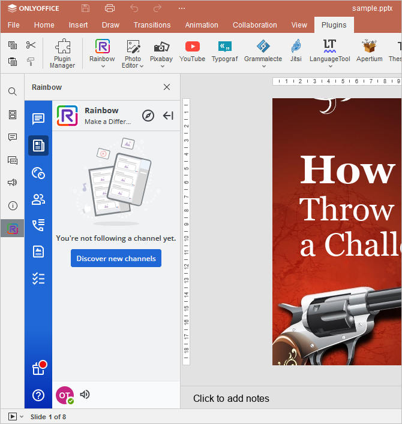

Komunikacija tokom uređivanja
U ONLYOFFICE Uređivaču prezentacija možete uvek ostati u kontaktu sa kolegama i koristiti popularne onlajn mesindžere, kao što su Telegram i Rainbow.
Dodaci Telegram i Rainbow nisu podrazumevano instalirani. Da biste pronašli informacije o tome kako da ih instalirate, pogledajte odgovarajući članak: Dodavanje dodataka u ONLYOFFICE Desktop Editore Dodavanje dodataka u ONLYOFFICE Cloud, ili Dodavanje novih dodataka u serverske editore, ili instalirajte dodatak koristeći Menadžer dodataka.
Telegram
Da biste započeli ćaskanje u dodatku Telegram,
- prebacite se na karticu Dodaci i kliknite Telegram,
- unesite svoj broj telefona u odgovarajuće polje,
- označite polje Zadrži me prijavljenim ako želite da sačuvate akreditive za trenutnu sesiju i kliknite na dugme Dalje,
-
unesite kod koji ste primili u Telegram aplikaciji,
ili
- prijavite se koristeći QR kod,
- otvorite Telegram aplikaciju na svom telefonu,
- idite na Podešavanja > Uređaji > Skeniraj QR,
- skenirajte sliku da biste se prijavili.
Sada možete koristiti Telegram za razmenu trenutnih poruka unutar interfejsa ONLYOFFICE editora.
Rainbow
Da biste započeli ćaskanje u dodatku Rainbow,
- prebacite se na karticu Dodaci i kliknite Rainbow,
-
registrujte novi nalog klikom na dugme Registruj se ili se prijavite na već kreirani nalog. Da biste to uradili, unesite svoju e-poštu u odgovarajuće polje i kliknite na Nastavi,

- zatim unesite lozinku svog naloga,
- označite polje Zadrži moju sesiju aktivnom ako želite da sačuvate akreditive za trenutnu sesiju i kliknite na dugme Poveži se,
-
popunite polja u prozoru Vaš identitet.

Sada je sve spremno i možete istovremeno ćaskati u Rainbow-u i raditi u okviru interfejsa ONLYOFFICE editora.
